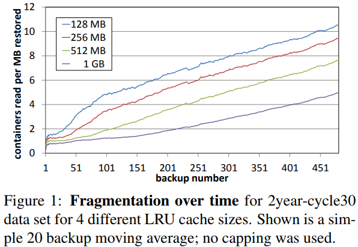

| Venue | Category |
|---|---|
| FAST'13 | Deduplication Restore |
Improving Restore Speed for Backup Systems that Use Inline Chunk-Based Deduplication1. SummaryMotivation of this paperMethod NameImplementation and Evaluation2. Strength (Contributions of the paper)3. Weakness (Limitations of the paper)4. Future Works
Restore speed in such systems often suffers due to chunk fragmentation.
Modern disks' relatively poor random I/O performance compared to sequential I/O, fragmentation greatly hurts restore performance.
Due to chunk sharing between backups, it is not possible in general to find a chunk layout that reduces the fragmentation.
Rearranging chunks can also be expensive
Chunk fragmentation and restore performance gets worse as time goes by, and affects the recent backups the most.
slowdowns of over three months for one and over two years for the other.
This paper investigates
hold n chunk containers at a time and take container size space. Measurement factor: the mean number of containers read per of backup restored for the backups of a long term data set. Proof: reading containers is the dominant restore cost. 
- raw I/O performance
- the container size
Capping trades off deduplication for faster restore speed
- In order to use fewer old containers, it has to give up deduplication
- instead of using a reference to an existing chunk copy in an old container, it will store a duplicate copy of that chunk in an open container and point to that copy.
Step:
This process guarantees that the recipe for each segments refers to at most T old containers plus a little number of new containers containing "new" chunks.
In deduplicated backup streams, two points different virtual memory paging:
- the effective unit of I/O is an entire chunk container (4MB), whereas the unit of the use is a much smaller variable-size chunk.
- at the time of starting the restore: it can have the prefect knowledge of the exact sequency of chunks that will be used thanks to the backup's recipe.
Main step: Page in chunk containers to a single buffer but cache chunks rather than containers to avoid keeping around chunks that will never be used.
consult the next part of recipe to make better decisions about what chunks from the paged-in containers to retain.
Goal: need load each container only once per range (M-byte slice) and do not keep around chunks that will not be needed during this range
This method can also combine with ring buffer to further improve the efficiency of memory usage.
- deduplication performance
- fragmentation
- restore performance
Details: 9000 C++ program
Unless deduplication is at a great premium, at least a small amount of capping should be employed.